Halo, aku Elsa Apriani
Berfokus pada pengembangan antarmuka web yang responsif (Front-End), standarisasi dan tata kelola sistem (IT Governance), manajemen administrasi proyek TI (IT Project Administrator), serta penjaminan kualitas aplikasi (Quality Assurance).
Tentang Aku
Profil singkat, latar belakang pendidikan, serta keahlian utama di bidang teknologi.
Lulusan berprestasi Teknik Informatika (IPK 3.92/4.00) dari Universitas Muhammadiyah Prof. Dr. HAMKA dengan pengalaman 1+ tahun di bidang IT Governance, IT Project Administration, Front-End Development, dan Quality Assurance Testing.
Selama perjalanan akademik dan profesional, saya telah berhasil menyelesaikan 10+ proyek berdampak. Pencapaian teknis utama meliputi perancangan dan dokumentasi 14 SOP IT Governance komprehensif (mencakup Backup, Hak Akses, dan operasional Data Center), pengembangan fitur web otomatis serta dashboard dinamis pada platform enterprise seperti IVO E-Office dan Tally HBT, serta memimpin User Acceptance Testing (UAT), Functional Design Diagram (FDD), Technical Design Diagram (TDD), dan tracking proyek melalui Project Charter. Selain itu, saya memegang beberapa sertifikat Hak Kekayaan Intelektual (HKI) serta publikasi jurnal terindeks SINTA.
Saya aktif mencari peluang untuk berkontribusi menggunakan keahlian multidisiplin di bidang IT Governance, IT Project Administration, Front-End Development, dan Quality Assurance (QA) Testing guna membangun solusi TI yang andal dan berkualitas tinggi.
Keahlian Utama
Tools yang Digunakan
Pendidikan dan Organisasi
Perjalanan akademik, prestasi perguruan tinggi, dan pengalaman organisasi selama perkuliahan.
Universitas Muhammadiyah Prof. DR. HAMKA (UHAMKA)
S1 Teknik Informatika | 2021 - 2025
Lulusan Terbaik Fakultas Teknologi Industri dan Informatika (FTII) UHAMKA dengan predikat Cum Laude. Memiliki fokus keahlian pada IT Governance, IT Project Administration, Front-End Development, dan Quality Assurance (QA) Testing.
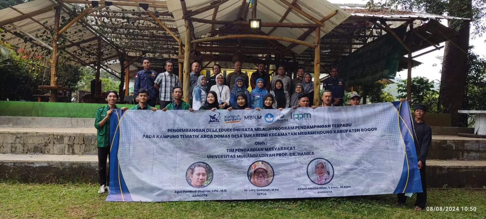
Pengabdian Masyarakat Dosen | Anggota
- Membuat website untuk promosi wisata Arca Domas di Desa Sukaresmi, Bogor.
- Menyusun naskah buku mengenai Eduekowisata Desa Sukaresmi.
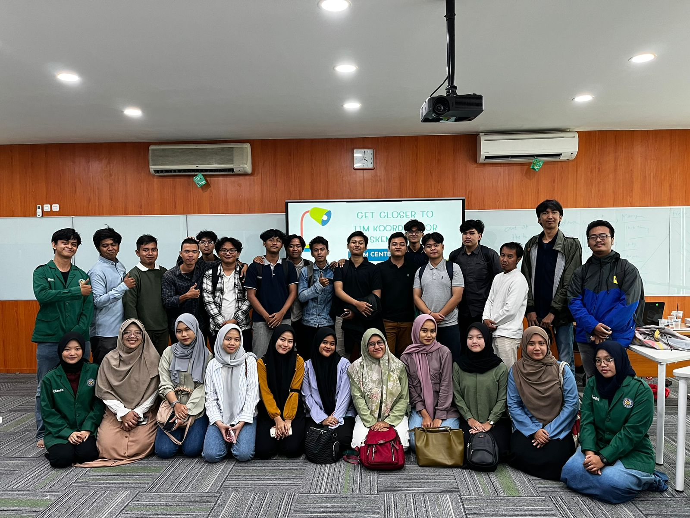
Panitia PKM Center FTII 2024 | Data Analyst
- Mengolah data terkait judul, dosen pembimbing, dan proposal peserta PKM menggunakan Microsoft Excel.
- Merekap dan memverifikasi kelengkapan data peserta PKM secara berkala untuk keperluan pelaporan.
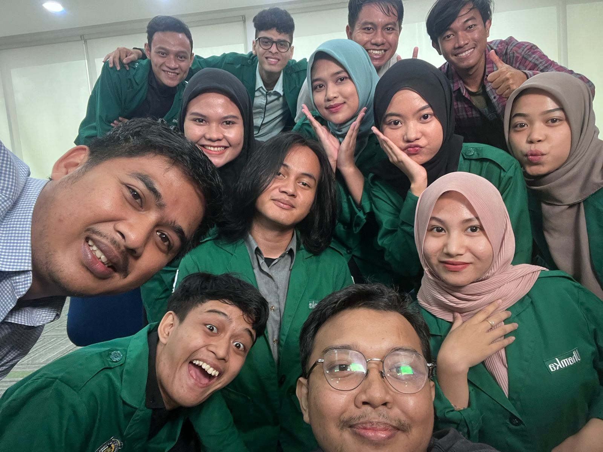
Talent FTII UHAMKA | Talent
- Menjadi talent dalam pembuatan konten kreatif Instagram dan TikTok untuk meningkatkan brand awareness serta promosi fakultas.
- Berperan aktif menyampaikan informasi program kampus secara kreatif melalui konten video interaktif yang mampu menarik minat calon mahasiswa baru.
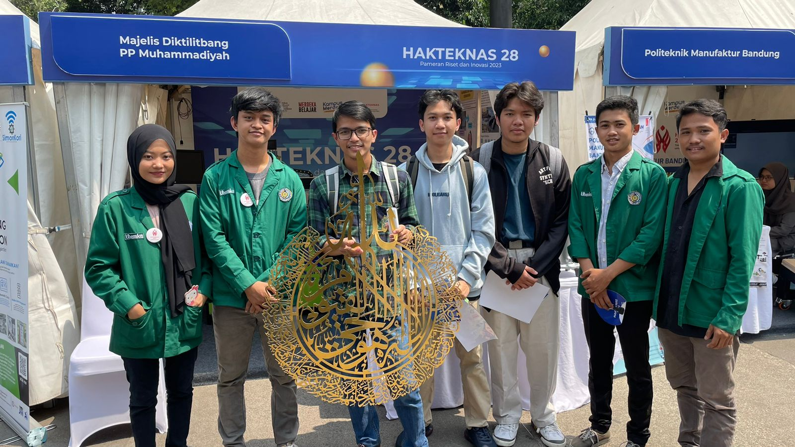
HAKTEKNAS ke-28 | Co-Organized
- Menjadi bagian dari delegasi Uhamka yang berperan sebagai Co-Organized pada Pameran Riset dan Inovasi HAKTEKNAS ke-28 yang diselenggarakan Kemendikbudristek.
- Turut mendemonstrasikan inovasi kreatif karya dosen dan mahasiswa Uhamka — Bola Makhorijul Huruf edisi ke-2, Mesin Pirolisis (pengubah limbah plastik menjadi minyak), dan Mesin CNC 3D Printer — kepada pengunjung pameran.
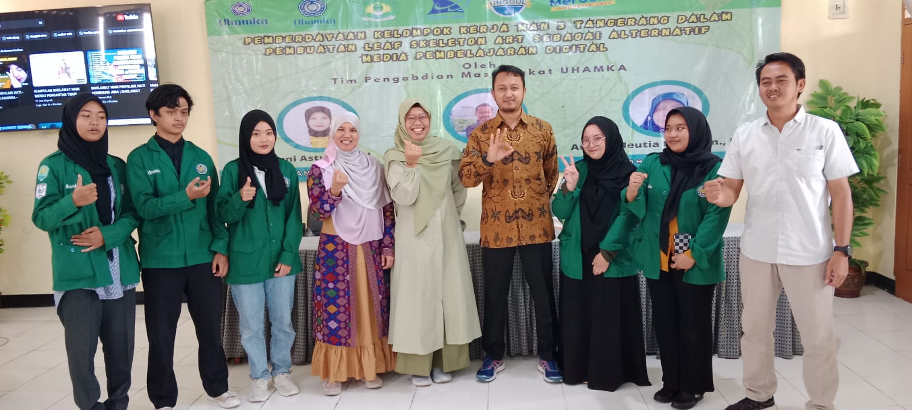
Pengabdian Masyarakat Dosen | Anggota
- Membuat video tutorial penggunaan LiveWorksheet sebagai panduan bagi guru dan siswa.
- Menyusun modul pembelajaran penggunaan LiveWorksheet untuk kegiatan belajar mengajar.
- Menjadi fasilitator pelatihan penggunaan LiveWorksheet di MAN 3 Tangerang.
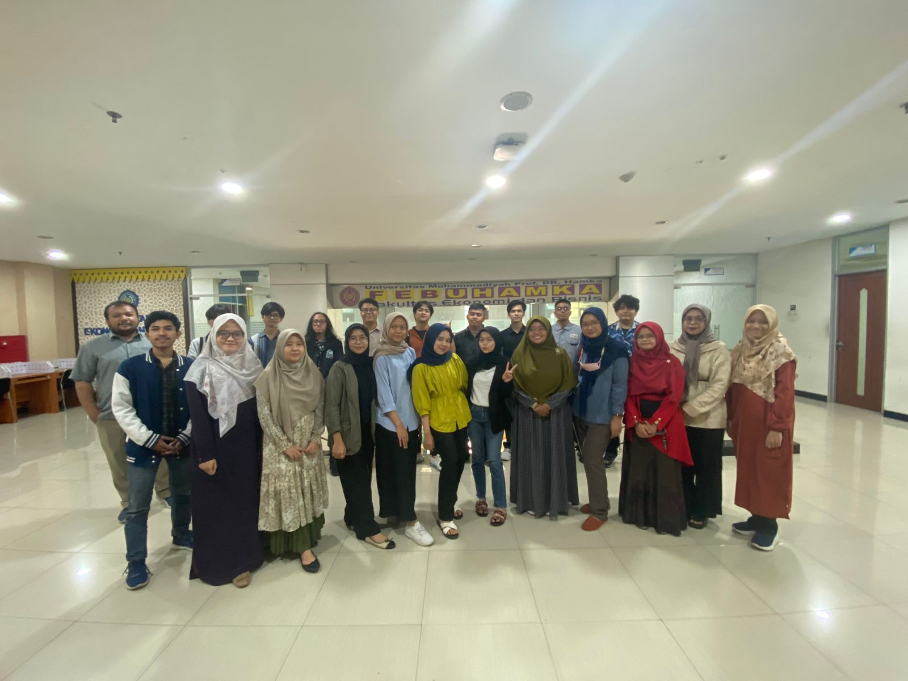
Project Game Antar Fakultas | Anggota
- Mendesain game Ular Tangga Perpajakan menggunakan Adobe Animate dan bahasa pemrograman ActionScript.
- Membuat dan mengimplementasikan tampilan kuis perpajakan pada board game.
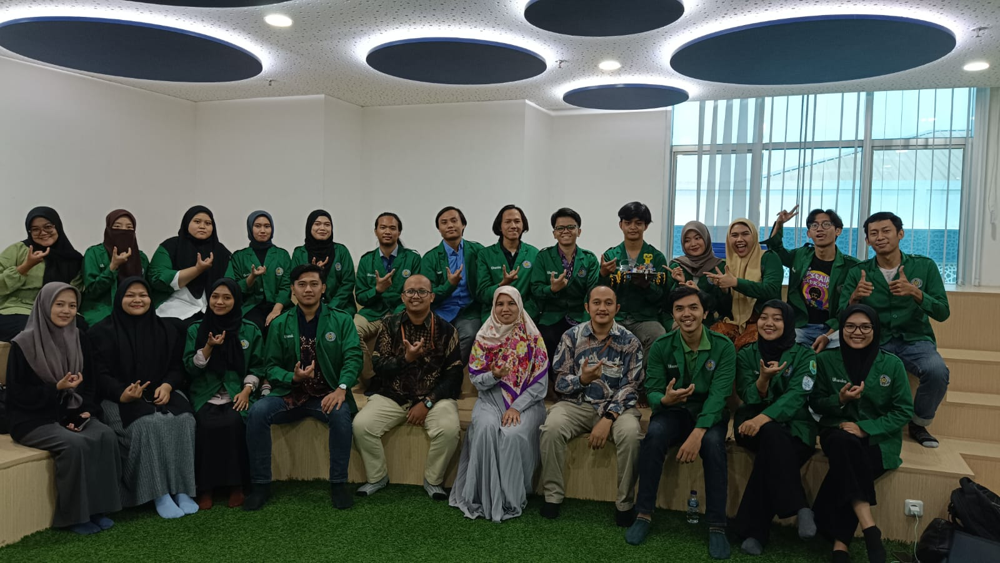
PKM FTII UHAMKA | Anggota
- Membuat proposal dan mengoordinasikan keperluan pendanaan untuk perancangan dan pembuatan robot.
- Berkoordinasi dengan tim dalam proses perancangan dan pembuatan robot sesuai timeline proposal.
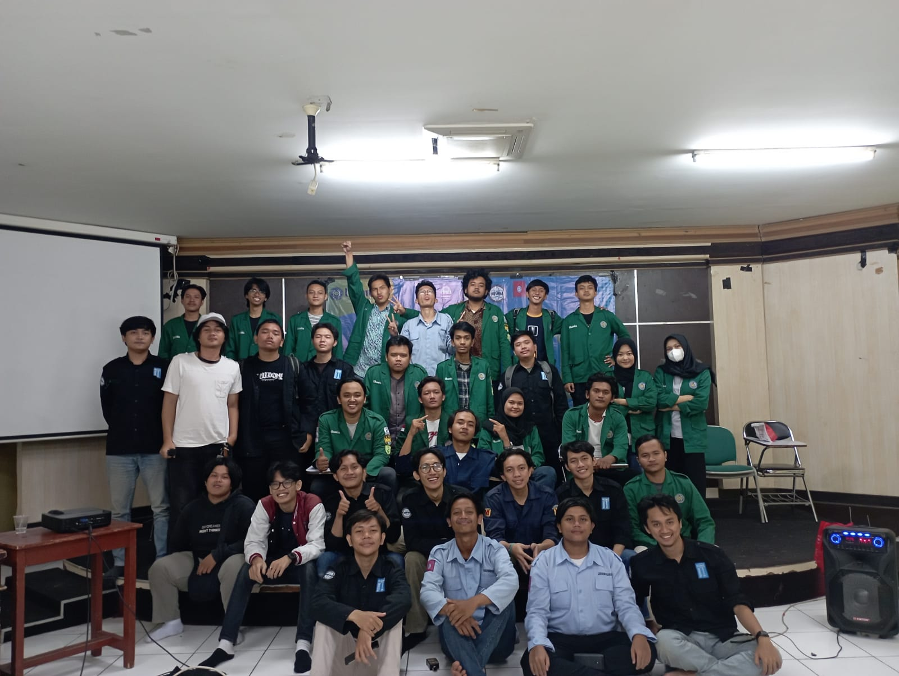
PEMIRA FTII UHAMKA | Bendahara
- Mengatur dan mengoordinasikan keuangan PEMIRA FT UHAMKA secara tertulis.
- Membuat laporan kondisi dan program keuangan secara berkala.
Pengalaman Kerja
Pengalaman kerja profesional, kontribusi proyek, serta pencapaian di dunia industri.
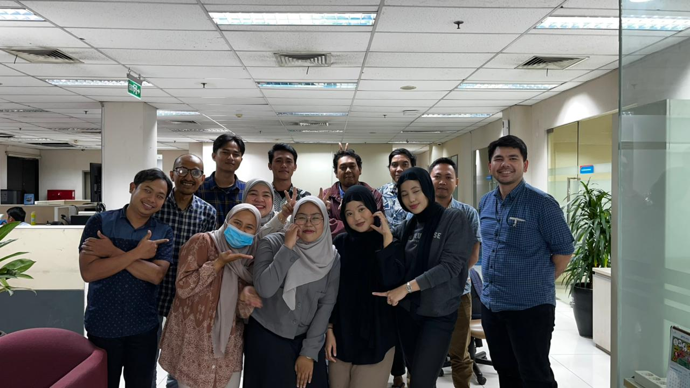
IT Governance dan Front End Developer | PT Pelabuhan Indonesia (Persero)
- Menyusun dan mendokumentasikan Standard Operating Procedure (SOP) dalam bentuk flowchart untuk mendukung efektivitas proses kerja.
- Mengembangkan fitur request regulasi dan watermark otomatis pada dokumen di website IVO E-Office pada PT Pelabuhan Tanjung Priok (Non Petikemas).
- Mengembangkan fitur dashboard monitoring kapal yang sedang melakukan aktivitas bongkar muat pada website Tally HBT pada PT Pelabuhan Tanjung Priok (Non Petikemas).
- Mengelola Minutes of Meeting (MoM), User Acceptance Testing (UAT), dan User Guide aplikasi Tally HBT, serta PIR aplikasi lainnya.
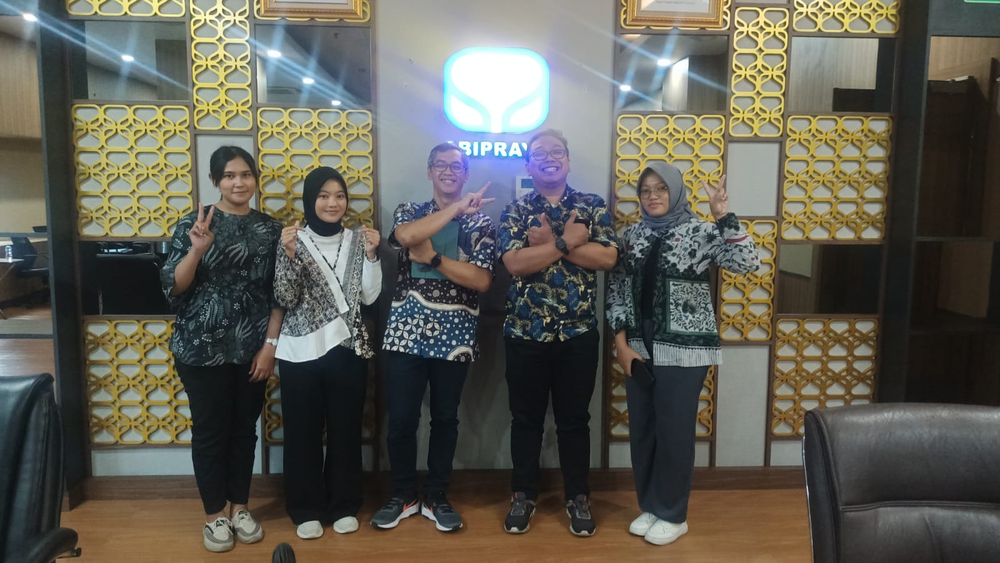
Multimedia | PT Brantas Abipraya (Persero)
- Merancang dan membuat flyer digital untuk kegiatan Workshop Fotografi, mulai dari konsep visual, tata letak, hingga hasil akhir yang siap dipublikasikan.
- Bertugas sebagai Master of Ceremony (MC) pada kegiatan Workshop Fotografi, memastikan acara berjalan lancar, tepat waktu, dan sesuai dengan susunan acara yang telah ditentukan.
- Mengelola sistem presensi peserta melalui Google Form, termasuk pembuatan formulir, monitoring kehadiran secara real-time, dan rekapitulasi data peserta untuk keperluan pelaporan.
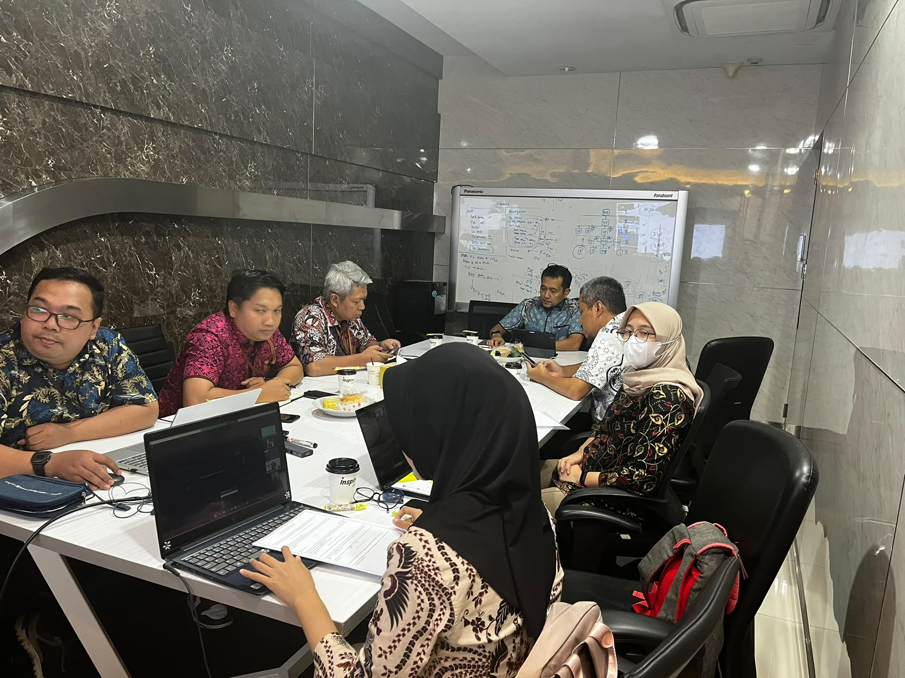
Multimedia | BPTI UHAMKA
- Mengembangkan video tutorial untuk penggunaan Website Akademik UHAMKA agar memudahkan pengguna dalam mengakses fitur-fitur akademik.
- Membuat video tutorial terkait aktivasi Pop-Up Blocker sebagai panduan Troubleshooting bagi pengguna.
- Menulis artikel edukatif dan merancang flyer mengenai isu Cyber Security, termasuk Malware dan Scam, untuk meningkatkan literasi digital pengguna.
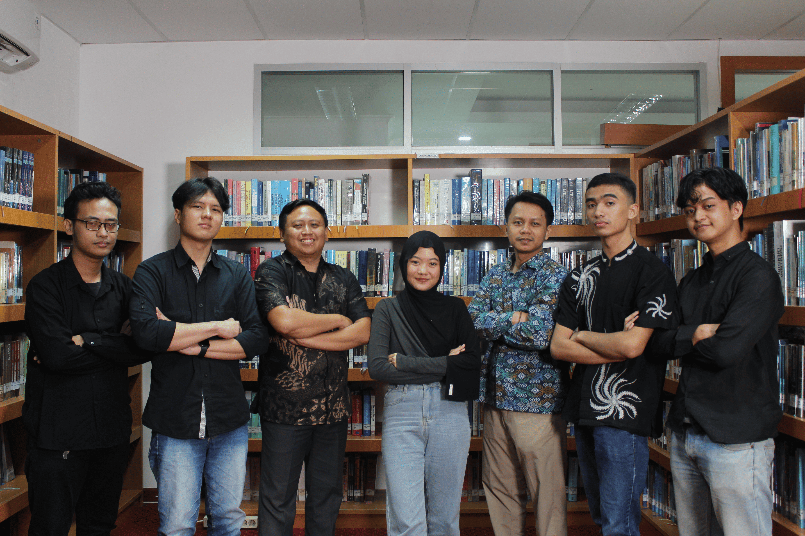
Asisten Perpustakaan | Universitas Muhammadiyah Prof. DR. HAMKA
- Melakukan pengecekan similarity dan plagiarism skripsi mahasiswa serta memproses administrasi bebas pustaka menggunakan sistem perpustakaan berbasis TI.
- Melakukan pengecekan, pendataan, dan pencatatan transaksi peminjaman serta pengembalian buku melalui sistem informasi perpustakaan.
- Mengelola operasional dan administrasi perpustakaan, termasuk pengarsipan digital dan manajemen koleksi.
- Menjadi panitia Pendidikan Pemakaian Perpustakaan (P3) bagi mahasiswa baru, termasuk memberikan edukasi mengenai penggunaan sistem informasi perpustakaan.
Projects dan Karya Ilmiah
Hasil projects, publikasi jurnal ilmiah, HKI, sertifikasi, dan lain-lainnya.
Tally HBT (Pelabuhan Tanjung Priok)
Deskripsi Project
Aplikasi operasional monitoring bongkar muat kapal dan pencatatan tally pelabuhan secara real-time pada PT Pelabuhan Tanjung Priok (Non Petikemas) yang terintegrasi dengan pelaporan logistik.
LUPI (Ludo Pajak Indonesia)
Deskripsi Project
Permainan edukasi perpajakan interaktif berbasis web dengan mekanisme papan Ludo multipemain untuk meningkatkan kesadaran dan literasi pajak masyarakat secara kompetitif dan kolaboratif.
IVO E-Office (Pelabuhan Tanjung Priok)
Deskripsi Project
Platform tata kelola persuratan, administrasi digital, dan permintaan regulasi enterprise pada PT Pelabuhan Tanjung Priok (Non Petikemas) dengan implementasi watermark dokumen otomatis.
ARTAJAK (Ular Tangga Pajak)
Deskripsi Project
Aplikasi game edukasi Android yang memadukan permainan ular tangga interaktif dengan kuis literasi pajak untuk siswa sekolah dasar, resmi terbit di Google Play Store dan bersertifikat HKI.
UAT Tally HBT (User Acceptance Testing)
Deskripsi Project
Lembar kerja pengujian User Acceptance Testing (UAT) komprehensif pada sistem aplikasi Tally HBT, mencakup skenario pengujian fungsional (test cases), verifikasi alur bisnis, pencatatan bug/discrepancy, serta validasi kesiapan sistem sebelum tahap go-live.
User Guide Tally HBT (Manual Book)
Deskripsi Project
Buku panduan operasional pengguna (User Guide / Manual Book) resmi untuk sistem aplikasi Tally HBT. Menyajikan panduan langkah-demi-langkah (step-by-step), navigasi antarmuka pengguna, standarisasi alur kerja transaksi, serta panduan penanganan kendala umum (troubleshooting) bagi pengguna akhir.
Monitoring Insight Portal
Deskripsi Project
Sistem lembar kerja pemantauan terpusat untuk metrik performa, lalu lintas data, integrasi portal, dan kesehatan operasional website Insight Portal secara akurat dan berkelanjutan.
Monitoring SOP (Standard Operating Procedure)
Deskripsi SOP
Dokumentasi dan sistem pemantauan komprehensif 14 Standard Operating Procedure (SOP) tata kelola teknologi informasi yang mencakup prosedur backup data, manajemen hak akses, pemeliharaan data center, dan kepatuhan operasional TI berbasis spreadsheet interaktif real-time.
Project Charter TI 2026
Deskripsi Project
Dokumen inisiasi dan piagam manajemen proyek teknologi informasi komprehensif yang memetakan tujuan proyek, ruang lingkup kerja (scope), alokasi sumber daya, stakeholder, jadwal milestone, dan mitigasi risiko teknologi.
IT Strategic Plan (ITSP)
Deskripsi Project
Dokumen dan presentasi strategis perencanaan teknologi informasi (IT Strategic Plan) yang mencakup analisis lanskap TI, roadmap arsitektur enterprise, inisiatif transformasi digital, serta keselarasan strategi TI dengan tujuan jangka panjang organisasi.
Kontak Aku
Mari berdiskusi mengenai peluang karir, kolaborasi proyek, atau diskusi profesional.
Let's Connect
Aku terbuka untuk peluang kerja sama, diskusi proyek, atau sekadar bertukar ide.